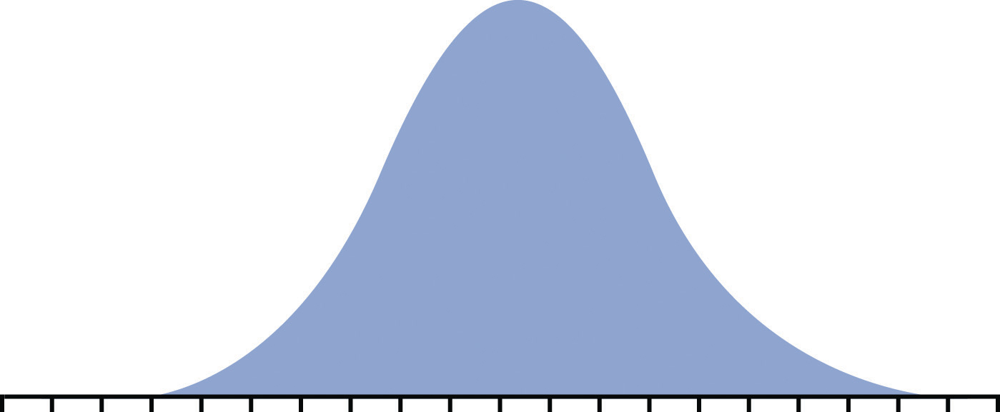
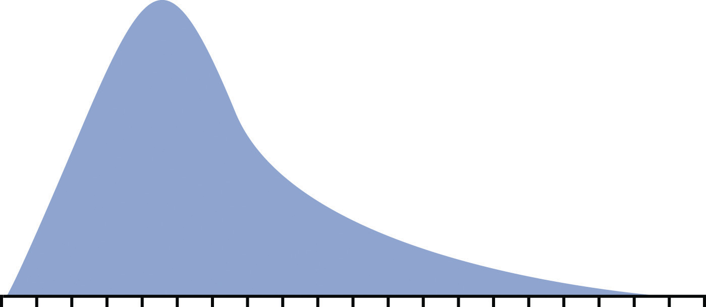
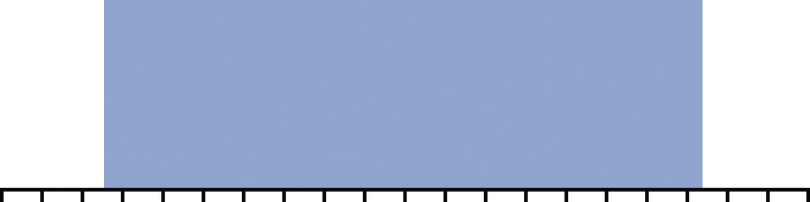
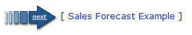
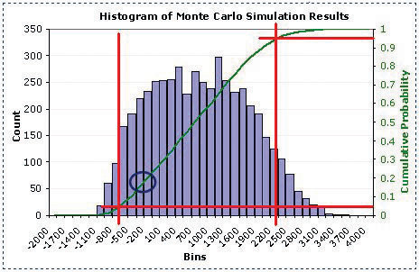

Planning for risks is a form of betting on the future. An accomplished gambler knows the odds of drawing a certain combination of cards in a poker hand or of a ball landing on a number at a roulette wheel. If a project has several risk factors, they are not likely to all occur on the same project, but it is important to know the odds of that happening and to compare them to the potential profit of the project. If several risks do materialize on the same project, it might cause the company to lose money on the project, and senior management must decide if the benefit is worth the risk.
Computers can generate random numbers that can be used to simulate the likelihood of combinations of risk factors occurring and the impact on the project’s profitability. These simulations calculate odds like those a gambler would use before placing a bet, and the process is named after a famous gambling center in Europe.
To use a Monte Carlo simulation, you have to decide how the frequency of occurrences is distributed. Three types of distributions are most common: normal, skewed, and equal. If they are governed by the central limits principle, the occurrences will have a normal distribution.
Figure 11.7 Normal Distribution
If the likely frequency of occurrences of a risk factor is more likely to be distributed to either side of the middle of the range, it is a skewed distribution.
Figure 11.8 Skewed Distribution
If the likelihood of occurrence is evenly distributed across the range where each possibility has the same odds of occurring, it is an equal distribution.
Figure 11.9 Equal Distribution
A computer can choose numbers for each risk factor that represent a possible outcome for that risk on the project according to its distribution. Those numbers are fed into a spreadsheet that determines the effect on the project and its costs. This process is repeated thousands of times, and the result of each iteration—repeated process—is stored in a table of possible outcomes. This table is summarized in a histogram that shows how many of the iterations produced profit (or loss) in each range (bin).
The outcome of a Monte Carlo simulation gives managers an idea of how much the project could make or lose and the odds of that happening. Monte Carlo simulations are often used to predict the likelihood of a new product making a profit or loss. The same methods can be applied to predicting the profit or loss on a project.
Complete the exercise by following these instructions:
Near the bottom of the first screen, click the arrow labeled Sales Forecast Example, as shown in Figure 11.10 "Next Page Button".
Figure 11.10 Next Page Button
Source: Courtesy of www.vertex42.com.
Continue reading and advancing screens until you get to the histogram as shown in Figure 11.11 "Estimated Loss or Profit".
Figure 11.11 Estimated Loss or Profit
Source: Adapted from Wittwer, J.W., "Creating a Histogram In Excel" from www.vertex42.com, June 1, 2004, http://vertex42.com/ExcelArticles/mc/Histogram.html.
Complete the exercise by following these instructions:
Read each of the first seven screens. Capture screens where indicated in the following list and paste them into Ch11MonteCarloStudentName.doc:
The authors make the case that a simple average of the risks produces an estimate that is too high. If they run a thousand combinations of risk outcomes, they predict a lower profit and a certain likelihood of losing money. In the word processing document, below the last screen capture, review the screens and answer the following questions:
Review your work and use the following rubric to determine its adequacy:
| Element | Best | Adequate | Poor |
|---|---|---|---|
| File name | Ch11MonteCarloStudentName.doc | .docx version | Student name not included |
| Describe the benefits of estimating risk using a Monte Carlo simulation | Two screen captures plus a description of how the chart is used to estimate the percentage chance of losing money; three screen captures and answers to the three questions; description of the benefits of a Monte Carlo simulation | Same as Best | Missing screens; inaccurate estimates; incorrect answers to the three questions; description without specific references |